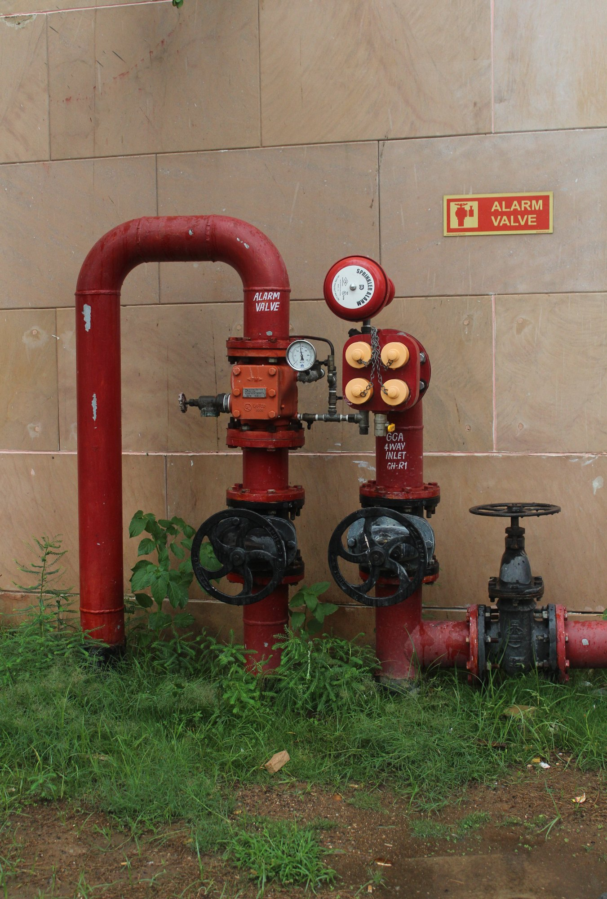
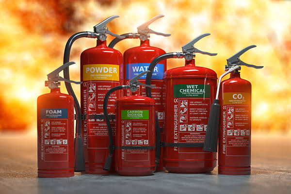
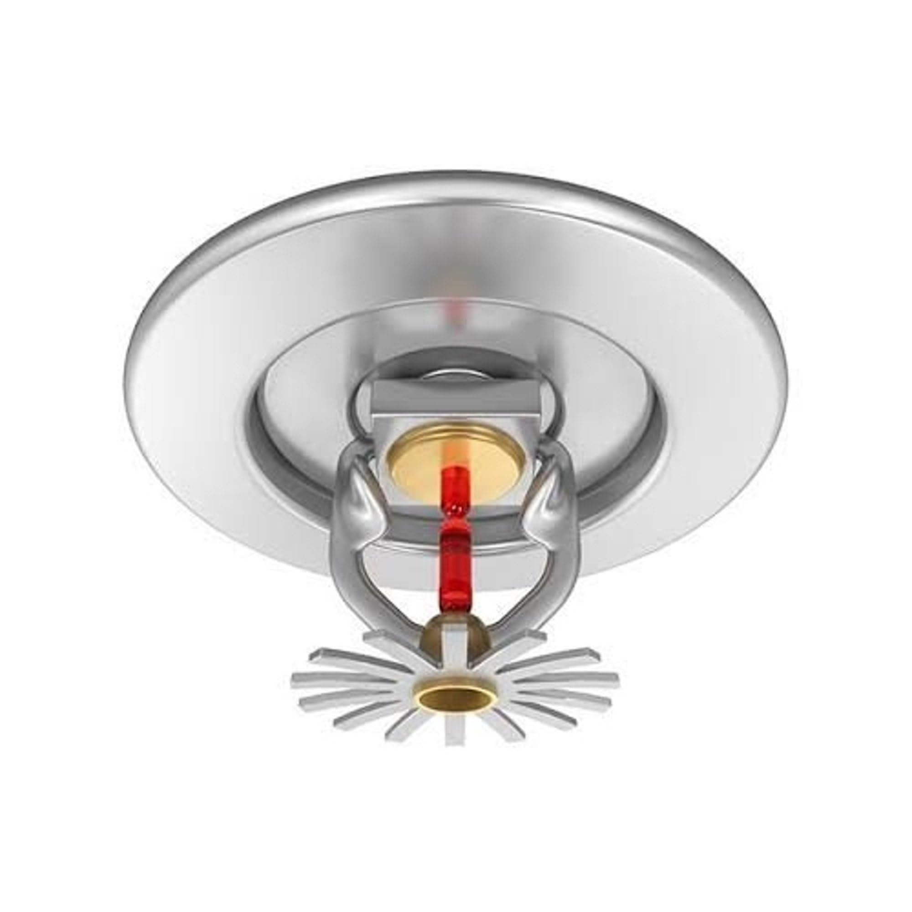

Introduction
The purpose of the Disaster Management Manual is to provide step-by-step guidelines to all stakeholders responsible for dealing with different types of incidents, accidents, disasters, and emergencies.

Key Objectives
- Save lives and alleviate suffering.
- Provide help to stranded passengers and arrange their prompt evacuation.
- Instill a sense of security amongst all concerned by providing accurate information.
- Protect Metro Rail property.
- Ascertain the cause of the accident.
- Expedite the restoration of train operations.
Civil and Structural Resilience
- Seismic Design: Located in Seismic Zone IV, the elevated track and infrastructure are designed to withstand an earthquake of intensity 7 on the Richter scale.
- Building Standards: Metro Station buildings are categorized as assembly buildings. Fire safety equipment is installed strictly per the National Building Code requirements.
Standard Operating Procedure (SOP) – Station
- Immediate response to station fire alarms.
- Execution of emergency evacuation protocols.
- Rapid mobilization of emergency services.
- Systematic response to local incidents and crowd management.
- Deployment of Emergency Stop Plunger (ESP) & Platform Supervisory Booth (PSB).

Comprehensive fire detection, suppression, and monitoring systems are integrated across all station panels, detectors, and suppression devices.
Key System Components

Fire Hose Cabinet (FHC)

Manual Call Points (MCP)

Smoke Detector

Visual cum sound Indicator

FACP

Pump Room

Fire Brigade Draw-off

Fire Extingusher

Sprinklers
Medical Facilities
- Emergency Coordination: Seamless coordination with private and government ambulance services (Dial 102 or 1098).

- First Aid: Fully equipped first-aid boxes are readily available across all stations and onboard all trains.

Passenger Information System (PIDS/PAS)
- Visual Displays (PIDS): Double-sided PIDS boards are installed on each platform; single-sided PIDS boards serve the concourse area.

- Audio System (PAS): The Public Address System ensures clear audio announcements covering the entire station layout.


CCTV Surveillance & AFC Control
- Strategic Coverage: Cameras cover concourse and platform areas, including TOM, AFC gates, lifts, escalators, and entry/exit points.
- Monitoring & Recording: A CCTV Man-Machine Interface (MMI) is active in the Station Control Room (SCR). Recording hardware is secured in the Telecom Equipment Room.

- AFC Emergency Mode: Computerized control of AFC gates is managed from the SCR. In emergencies, all gates switch to free-mode for rapid evacuation.

Safety & Directional Signage
Clear, standardized signage guides passengers during normal operations and emergencies:

Exit Signage

Fireman Staircase

Fire Exit

Emergency Exit Sign
Train Structural & Safety Features
- Fire Retardant: Extensive use of non-inflammable materials in the body structure.
- Underfloor Protection: Coach underfloors are rated for a 30-minute Fire Resistance Period (FRP).
- Crashworthiness: Body structure is engineered to absorb collision energy and resist deformation.
- Emergency Lighting: 1-hour battery backup for internal emergency lighting.
- Emergency Announcement: Train is equipped with PA system having pre-recorded announcements.

Onboard Emergency Equipment
- Fire extinguishers provisioned inside every train car.
- Emergency doors and emergency ventilation systems.
- Exterior release devices accessible at selected doors.
- Direct emergency communication channels between passengers, Train Operator (TO), and Operation Control Centre (OCC).

Fire Protection & Evacuation Protocols
- 30-Minute Shield: Underfloor 30-minute FRP allows critical time to transit to the nearest station during a fire incident.
- Emergency Doors: Designated doors facilitate rapid passenger evacuation.
| Device | Location | Purpose |
|---|---|---|
| Emergency Egress Device (EED) | Every door | Interior passenger exit |
| Emergency Access Device (EAD) | L2 / R3 doors | Exterior rescue team access |

Passenger Communication System
- Public Address: Trains feature a robust PA system integrated with automated, pre-recorded emergency guidance announcements.
- PECU: Provision of Passenger Emergency Communication Units (PECU) allows immediate two-way contact with train operations staff during distress.


Internal security is managed by UP SSF, while UP Police handles law and order.
- Mandatory security checks of all commuters entering paid areas.
- Quick Reaction Teams (QRT) stationed for rapid emergency deployment.
- Specialized Bomb Disposal Squads and Dog Squads.


Fire is one of the most critical hazards in metro operations. Key threat areas include:
No water shall EVER be used to extinguish an electrical fire.
Immediate Fire Actions
- Power De-energization: Power supply must be cut off immediately by informing the Traction Power Controller.
- Suppression Methods: Use inert gas flooding and clean-agent extinguishers instead of water for electrical systems.